Games · 개막일 설명과 갱신
BEFORE 파일은 360px입니다. AFTER는390px 명목 viewport(스크롤바 제외 DOM375px). 서로 다른 date/fixture를 담은 캡처이므로 수치 전후 변화나 pixel diff로 읽지 않습니다.

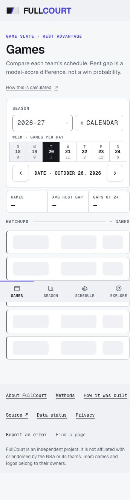

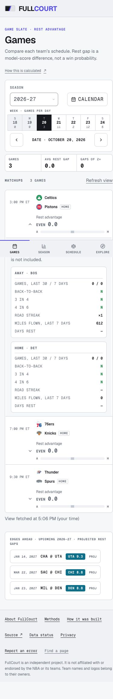
FULLCOURT / REMEDIATION / 2026-10-11
감사의 C1–C6·U1과 9개 UI 권고를 로컬 구현에 반영했습니다. 기존 감사의 실제 캡처와 수정한 연결 화면, PostgreSQL 재현과 검증 로그를 함께 읽는 보고서입니다.
로컬 구현운영 미배포독립 리뷰 대기
Node22 전체 unit·lint·typecheck·build와 로컬 PostgreSQL 계약은 통과했습니다. 첫 E2E는 413개 통과·2개 실패였습니다. 레이아웃 수정 뒤 해당 6개·관련 파일 17개가 통과했고, 최종 전체 E2E를 재실행 중입니다. 독립 리뷰와 실패 해소 전 최종 수용을 주장하지 않습니다. commit·PR·merge·deployment·production write는 수행하지 않았습니다.
근거 표기: [Verified]는 source와 연결된 로컬 검증 기록, [Inferred]는 조건부 판단, [Unknown]은 운영·기기 검증 공백입니다. 아래 구현 결과 열의 코드 설명과 기록된 테스트 결과는 [Verified]이며, 한계 열의 미검증 항목은 [Unknown]입니다. 보류 권고의 다음 결정 조건은 [Inferred]입니다.
계수·스키마·생성된 분석 수치는 변경하지 않았습니다. ET 날짜, publishableGames, rested-home headline과 venue baseline, rest-advantage 식별자는 보존합니다.
| 수정 | 이전 동작 | 구현 결과 | 증거와 수용 단계 | 남은 한계 |
|---|---|---|---|---|
| C1 · FINAL 뒤 다음 경기 복구 | 점수 대상이 0이면 refresh도 조기 종료 | 점수 stage와 독립된 다음 경기 reconciliation. 오늘·내일 ET, 팀별 첫 미래 팁, 30일 prior FINAL 범위. 누락/오래된 계산부터 반복 처리 | 구현 · 로컬 exercised/verified 실패 baseline · 검증 근거 | 반복 복구이며 durable outbox 아님. 08–21 UTC cron 공백 때문에 모든 팁 전 복구를 보장하지 않음 |
| C2 · 열린 Games 전체 재조회 | score/status overlay와 fatigue가 분리; 오래된 요청·실패 위험 | 관련 visible/online slate 60초, focus/reconnect, Realtime invalidation 전체 refetch. 250ms debounce·single-flight·trailing request·generation·12초 deadline. 실패해도 표·확장·focus 유지 | 구현 · 로컬 exercised/verified 검증 근거 | local proxy 실패/성공 브라우저 확인. 실제 Supabase delivery·실전 FINAL→rescore→화면 경로는 미검증 |
| C3 · origin cache 절대 만료 | 동일 stamp에서 무기한 보관 가능 | loader 시작부터 절대 TTL. 현재/예정·mixed backtest 300초, 역사 3600초. 같은 stamp 공유·변경 stamp 분리·30초 loader deadline·identity eviction | 구현 · 로컬 exercised/verified 검증 근거 | TTL은 즉시 dependency invalidation 아님. nominal 현재 origin+edge 약420초, 역사 Schedule 약7500초 + query/network/UI/source 지연 |
| C4 · 팁 지난 EDGES AHEAD 제거 | 응답에 tip instant 없이 최초 목록 고정 | nullable UTC tipOffUtc + client clock. null 유지, invalid 제외. abs RA/date/id 동일 순서. optional limit 3–30; strip 6개 reserve/refill, 기본 전체 응답 유지 | 구현 · 로컬 exercised/verified 검증 근거 | 기존 약30초 clock 다음 tick에 제거. query는 전체 후보를 읽음; latency 개선 주장은 없음 |
| C5 · ESPN 부분 실패 전달 | 성공 writes 후 partial failure도 exit0 가능 | 25초 request/body abort. 성공 날짜 보존, failed date degraded2, fatal1. Python 부모는 downstream 진행 후2 보존, fatal 우선 | 구현 · 로컬 exercised/verified 검증 근거 | authentic ESPN state=post·empty events 확인. 실제 Actions 실패 이메일·운영 partial commit은 미검증 |
| C6 · 동시 계산·교체 정합성 | caller가 미리 읽은 입력으로 나중에 stale overwrite 가능 | refreshGame(gameId) 공통 writer. READ COMMITTED target FOR UPDATE 후 별도 statement fresh snapshot. 순수 계산·양팀 fatigue·unresolved pick 원자 교체. resolved pick 보존 | 구현 · 로컬 exercised/verified null-tip 실패 baseline · 검증 근거 | actual clock 재검사·rollback, null tip skip. source priors는 잠기지 않아 후속 reconciliation 필요. pool 대기와 플랫폼 cancel은 미검증 |
| U1 · Home Court 링크 이름 | 화살표만 남아 목적지 불명 | 문서 route union 기반 단일 label registry. View Home Court. 누락은 타입/coverage 계약으로 방어 | 구현 · 로컬 exercised/verified 검증 근거 | Enter로 /home-court 이동 실제 확인; exhaustive human screen reader 미검증 |
C1과 C6 null-tip은 수정 전 실패 기록이 있습니다. C6 원래 writer의 stale OT overwrite 경쟁은 구현 후 동일 격리 DB에서 원래 port를 재현했습니다. 이를 실패 먼저 테스트한 것으로 표현하지 않습니다.
BEFORE는 2026-10-11 기존 운영 감사 PNG를 이름 그대로 복사했습니다. AFTER는 로컬 PostgreSQL18 복원본에 연결한 브라우저 화면입니다. 수치·경기·날짜·폭이 다른 경우 아래에 표시했습니다. 이미지는 클릭해 원본으로 열 수 있습니다.
이전 제안 모형 보기 — 설명용 illustration이며 실제 AFTER 캡처가 아닙니다.
BEFORE 파일은 360px입니다. AFTER는390px 명목 viewport(스크롤바 제외 DOM375px). 서로 다른 date/fixture를 담은 캡처이므로 수치 전후 변화나 pixel diff로 읽지 않습니다.


양쪽 명목1440px. 기존 운영 감사와 로컬 복원 DB 화면의 date/상태 차이가 있습니다.
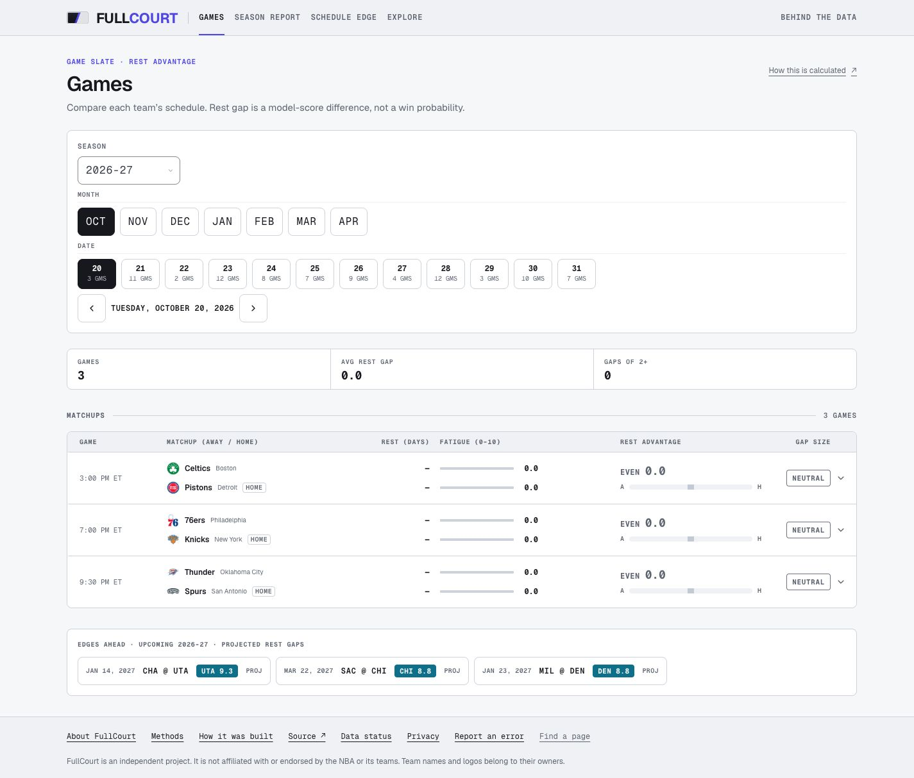
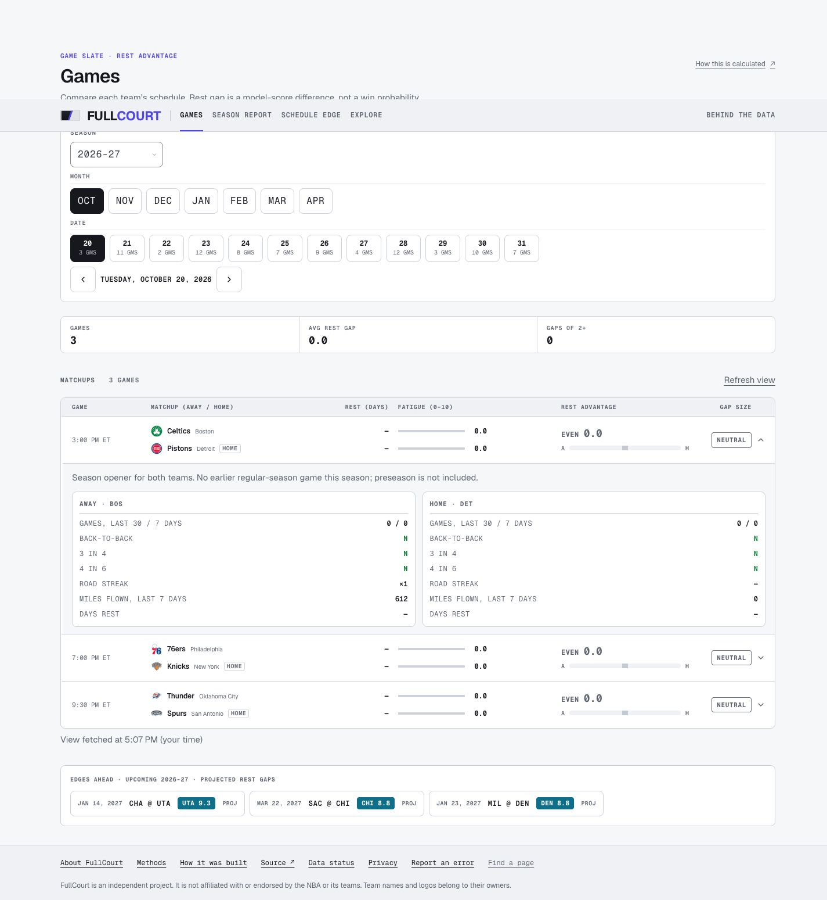
양쪽 명목360px. 동일 픽셀 위치·같은 선택 상태의 통제 실험은 아닙니다.
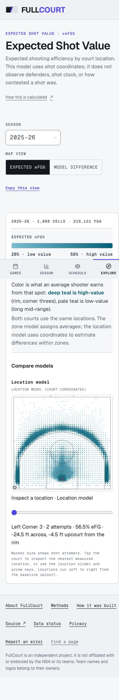
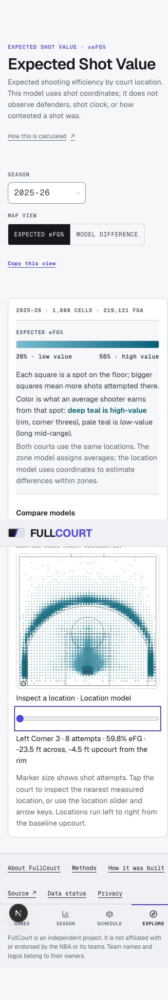
양쪽 명목360px. AFTER latest published와 추가 earliest/unpublished 확인은 각각 evidence에 보존했습니다.
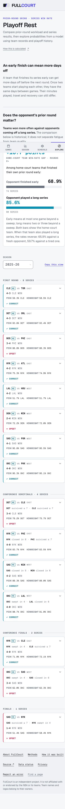
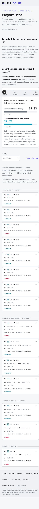
양쪽1440px. AFTER의 On this page와 기존 anchor 목적지 보존을 함께 확인합니다.
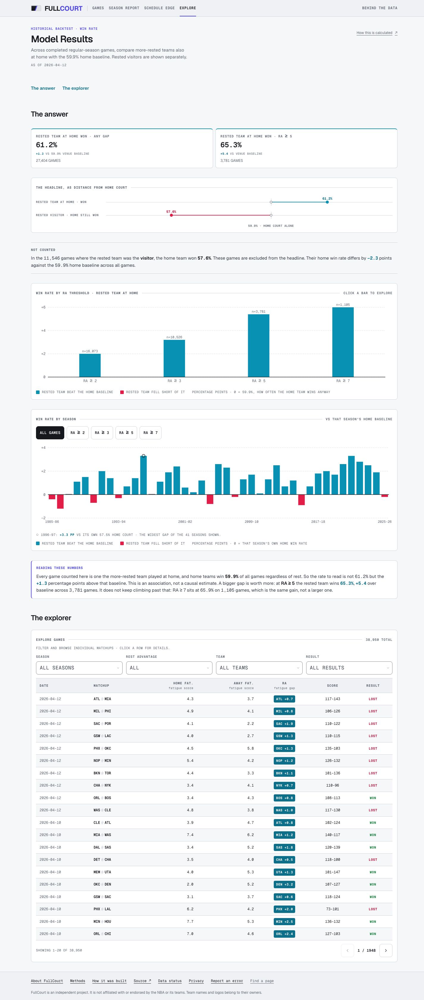
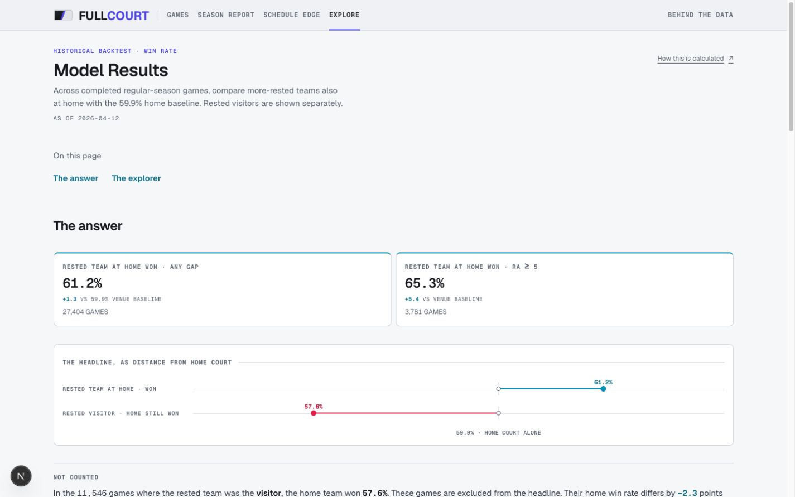
양쪽 명목360px. 표 내부 overflow는 유지하고 document overflow와 구분합니다.
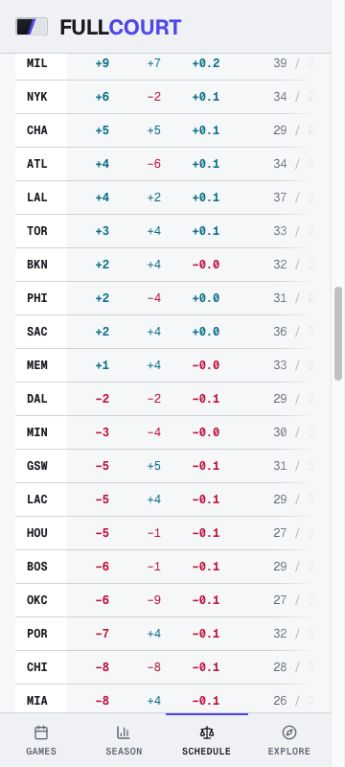
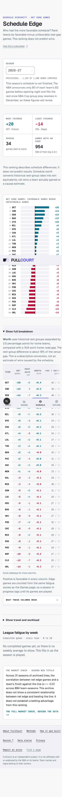
양쪽 명목360px. 기존 운영 DB와 로컬 복원 DB의 coverage/날짜/접속 상태가 다를 수 있습니다.
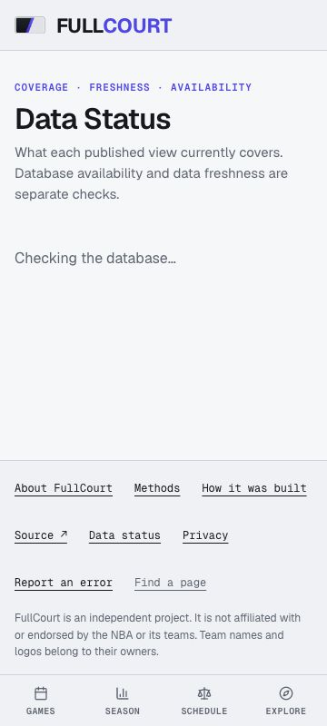
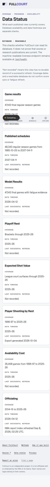
local proxy가 slate API에1.5초 지연·503을 주입했습니다. 표3행·확장 game118696·URL·버튼 focus가 유지됐고 retry 성공 뒤 경고가 사라졌습니다. 운영 장애나 Supabase 이벤트 재현은 아닙니다.
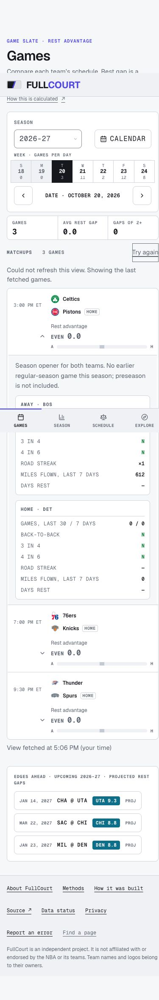
Home Court 이동 · 360px 탐색 · Shot difference · earliest N/A · unpublished · Data Status1440 · Schedule390
200% Chrome page zoom은 native AX와 DOM(DPR2·720CSSpx·overflow 없음)으로 확인했습니다. 캡처 backend가 zoom 화면을 잘라 PNG는 시각적 clipping 통과 증거가 아닙니다. text-only200%와 물리 iPhone은 미검증입니다.
U1 기존 화살표만 남은 실제 화면: method-arrow-link-1440.png. 변경 후 named-link Enter 이동 결과: Home Court 실제 목적지. 서로 다른 페이지이므로 동일 화면 전후 비교로 표시하지 않습니다.
| 권고 | 반영한 결과 | 실제로 확인한 것 | 근거 |
|---|---|---|---|
| 1 · U1 링크 | 의미 있는 Home Court 이름·registry | Enter 이동 확인 | DOM/keyboard |
| 2 · Games 개막일 | 저장된 전체 regular schedule 첫 경기 metadata; 양팀/한팀 opener 설명, preseason 제외. 0이나 missing으로 추정하지 않음 | 연결 API·unit/실제 화면. 실제 coverage 밖 opener는 확정 못 함 | 실제 화면 |
| 3 · Games 갱신/실패 | 표·URL·확장·focus 유지, 조용한 retry; View fetched at은 수신 시각 | 1.5초 delay·503 local proxy, 실패→성공 확인 | 브라우저 결과 |
| 4 · Edges 팁 | UTC clock·reserve/refill·6개 전달 | elapsed/null/invalid unit 확인; 실경기 팁은 미검증 | tests |
| 5 · Shot Value | 안내 10→15px 본문, AA muted prose | 390/360·slider ArrowRight·difference mode, contrast5.96/5.56:1 | rendered checks |
| 6 · Playoffs | PICK 이전 시즌만, HINDSIGHT target 포함. named-team 확률·N/A 설명 | latest·1985-86 N/A20개·2026-27 unpublished 실제 선택 | earliest 화면 |
| 7 · Model Results | On this page, 기존 #answer/#explorer, 44px | 360·1440·fragment/back 확인 | anchors |
| 8 · Schedule | 기존 internal scroll/pinned units 유지; win equivalents는 실제 얻은 승수가 아님 | 390 문서 overflow 없음, 내부500px/343px·tabindex0 | 실제 표 |
| 9 · Data Status | Coverage/data-through/refresh/DB 분리 유지, durable 성공 기록 부재 설명 | 360/1440, Not recorded6개 그대로; telemetry schema 미도입 | 실제 화면 |
검색 URL·modal/calendar focus·Officiating 원문/crew/plays·venue baseline·표본/단위·Find a page·Full formula disclosure를 보존하는 범위입니다. 모든 표를 카드로 바꾸거나 홈페이지를 재설계하지 않았습니다.
실제 코드: cron route · CLI score writer · absolute cache · slate lifecycle · upcoming strip
정합성 상세 · cache·pipeline 상세 · UI lifecycle 상세
두 독립 DB connection·pg_stat_activity Lock barrier·실제 clock·pair/prediction rollback·gap repair·resolved preservation·projection/nightly CLI를 격리 schema에서 확인했습니다. 원래 table definitions와7 foreign keys를 복사·catalog 대조하고 orphan23503을 확인했습니다. public/production rows는 변경하지 않았습니다.
동일 격리 PostgreSQL18 복원본·로컬 production build에서 읽었습니다. CDN 전송·운영 트래픽·사용자 p95·mobile field performance로 일반화하지 않습니다.
| 대상 | baseline | 수정 후 관찰 | 해석과 한계 |
|---|---|---|---|
| Upcoming 응답 | 633개 /225,124B | strip6개 /2,380B | baseline 대비98.94% raw bytes 감소. 새 기본 전체는249,811B; optional field 증가. offline gzip14,359→612B 추정 |
| Games 초기 scripts | 20개 /gzip374,140B | 20개 /gzip375,154B | +0.27%. 전체 page transfer 아님. JS splitting 미적용 |
| Player JSON parse | 782,410B /gzip280,255B | median3.85ms /p954.37ms | Node26 local Mac process. low-end browser render/INP 아님; dataset partition 보류 |
| Upcoming DB read | 통제 before latency 없음 | single local100.57ms; 실제 plan은 링크 참조 | 6개 반환이어도633 후보 읽음; query capacity·속도 향상 근거 없음 |
| Explorer DB read | 통제 before latency 없음 | single local279.70ms /38,957 matches | plan execution228.67ms; SQLpagination semantics 보존 검토 필요 |
baseline JSON · after JSON · player parse · real EXPLAIN plans
| 원래 추가 권고 | 현재 상태 | 다음 증거/범위 |
|---|---|---|
| Upcoming payload | 구현·측정 | optional limit/rank6 reserve/refill; default 전체 보존 |
| 초기 JS splitting | 조건부 보류 | cold mobile LCP/INP·chunk ownership·focus/URL 동작 근거 뒤 결정 |
| Player partition | 조건부 보류 | low-end parse/render·검색/상태·캐시 비용 근거 뒤 결정 |
| Explorer SQL pagination | 조건부 보류 | real plan 확보. publishableGames·called side·visitor/total 동일성 계약과 비용 비교 뒤 결정 |
| Artifact ownership | 문서 반영 | producer/input/output/guard/regeneration manifest; 기존 연구·ml/data·스크린샷 삭제 없음 |
| Referee drift guard | 새 guard 구현·3 tests | 이번 remediation에서 referee-career-drift.test.ts contract3개를 추가했습니다. manifest 참조. figures hand-edit/regen 없음 |
| 문서 drift | 현재 구현에 맞춘 correction | FRONTEND·API·pipeline/cache 문서 반영. 날짜 있는 과거 연구 보존 |
| Data Status durable telemetry | 조건부 보류 | absence 설명만. durable run/partial/failure/schema 계약 없이는 green timestamp 만들지 않음 |
| 성능 budget/부하 | baseline만 확보 | p95·INP·capacity thresholds 미합의. production load는 explicit owner yes 필요 |
| 검사 | 현재 결과 | 기록 |
|---|---|---|
| Node22 pnpm lint | 통과 | log/JSON |
| Node22 pnpm typecheck | 통과 | log/JSON |
| Node22 pnpm test:run | 89 files ·1,111 passed | log/JSON |
| Node22 pnpm build | 통과 | log/JSON |
| pnpm audit --prod | No known vulnerabilities | log/JSON |
| PostgreSQL18 isolated contracts | 20 passed·양 CLI 경로 포함 | log/JSON |
| Python scripts unittest | 7 passed | log/JSON |
| Python ml unittest | 35 passed | log/JSON |
| Playwright connected local | 초기 413 pass/2 fail → 수정 후 focused 6/6·related 17/17; 전체 재실행 중 | log/JSON |
| Games actual focus/failure/retry | local proxy exercised·verified | log/JSON |
| Rendered UI mobile/desktop/keyboard | 360/390/1440·anchors/slider/empty 확인 | log/JSON |
초기 E2E의 mobile 첫 matchup 위치와768px column 접근 실패는 새 refresh 행의 높이 때문이었습니다. 버튼을 기존 MATCHUPS 제목 행에 합치고 수신 시각을 표 아래로 옮긴 뒤 기존 기대값을 유지한 focused6/6·관련17/17이 통과했습니다. 첫 독립 검토의 commit-time FINAL downgrade 방어와 malformed ESPN envelope 처리도 실패 회귀→수정→로컬 PostgreSQL20개 계약으로 검증했습니다. 정확한 frozen candidate 리뷰와 최종 전체 E2E는 대기 중입니다.
구현·exercise·verify: 각 권고의 product code와 unit/로컬 DB/실제 browser 근거는 위 표에 분리했습니다. 배포 및 운영 verify: 아직 없습니다.
원래 28개 목록을 삭제·대체하지 않았습니다. done은 해당 읽기 전용 조사를 완료했다는 뜻이며 운영 용량·연기 경기·자동 갱신이 실전 검증됐다는 뜻은 아닙니다. Owner에게 한 번 묻고 받은 답 “none”을 2–10 모두에 기록했습니다. 알림이나 설정을 대신 변경하지 않았습니다.
| 번호 | 상태 | 원래 항목 | 증거 / 다음 조건 |
|---|---|---|---|
| 1 | waiting | Oct 12 첫 PR #122 nightly 로그 | 최신 read: Oct11 00:09:47UTC run38097482294, head eeccb73(PR122 이전). Oct12 target run 아직 없음. 관찰한 Oct 11 #38097482294: 36 games / 72 fatigue / 8 predictions / 0 failures. 0 score writes, CDN 403 fallback. 기대 86/11과 다른 날짜 창이므로 완료 처리하지 않음. |
| 2 | blocked | Outlook Sentry alert email | Owner 응답: none. 미완료. |
| 3 | blocked | UptimeRobot app·두 monitor Push | Owner 응답: none. 미완료. |
| 4 | blocked | Sentry 두 번째 email·routing | Owner 응답: none. 미완료. |
| 5 | blocked | GitHub 실패 email 수신 | Owner 응답: none. 미완료. |
| 6 | blocked | Mac 외부 DB backup 사본 | Owner 응답: none. 미완료. |
| 7 | blocked | 실제 iPhone Games·calendar | Owner 응답: none. viewport 검사는 물리 기기 확인이 아님. |
| 8 | blocked | DATABASE_URL Sensitive | Owner 응답: none. 미완료, optional. |
| 9 | blocked | Sentry source-map token | Owner 응답: none. 미완료, optional. |
| 10 | blocked | Supabase plan 확인 | Owner 응답: none. 현재 plan/usage 미확인, optional. |
| 11 | waiting | 첫 FINAL 저장 | Oct 20 22:00/23:00 UTC 이후. |
| 12 | waiting | LIVE → PENDING → FINAL | 첫 실제 slate에서 검증. 현재 소스·과거 clock tests는 실경기 증거 아님. |
| 13 | waiting | BOS/DET 다음 경기 rescore | FINAL보다 늦은 computed_at 확인 필요. cron secret 수동 호출은 owner. 이번 remediation에서도 production 호출 안 함. |
| 14 | waiting | 저녁 Vercel cron 2XX | 개막일 Observability/Cron Jobs 확인. Hobby 짧은 로그 보존에 유의. |
| 15 | waiting | nightly matched·write count | Oct 20 이후 실제 경기 로그 필요. |
| 16 | waiting | LAUNCH_DAY 전체·run/window/count 기록 | 첫 완료 slate에서 순서대로 수행. |
| 17 | done | 동시 방문자 구조 읽기 전용 조사 | 소스·CDN/일반 응답 검사 완료. 풀은 warm instance마다 기본 1. 실제 동시 수용량은 미검증; production 부하 미실행. |
| 18 | blocked | 배당 feed 기대 cadence·quota | 추적 runtime 없음. provider/구독/계획을 owner가 정해야 실제 quota 검증 가능. 소스 검색은 완료. |
| 19 | done | 연기 경기 표시 조사 | espn-scoreboard.ts:118, game-phase.ts:20와 matching 소스 확인. 실제 연기 재현 아님. 알려진 한계를 보고, 구현 안 함. |
| 20 | done | Hobby limits 읽기 전용 조사 | 현재 공식 limits·duration·cron 문서 확인. 실제 잔여량과 예상 방문자 수는 Unknown. |
| 21 | done | TLS expiry·renewal 조사 | live certificate 만료 Jan 4, 2027 09:16:17 UTC 확인. 자동갱신은 provider 문서, 성공은 아직 미래. |
| 22 | waiting | December 30게임 추가 ingest | December 일정 공개·owner production write yes 필요. 지금 writer 실행 안 함. |
| 23 | not started | home-advantage-trend chart redraw | 낮은 우선순위, 이번 remediation에서 Matplotlib 재생성 안 함. |
| 24 | not started | referee/officiating/shooting figures regen | 재생성 안 함. 이전 handoff의 unchanged 입력 판단을 새 재생성 결과처럼 주장하지 않음. |
| 25 | not started | stored score/date/OT 교차 검증 | 이전 Oct 4 기록 유지. 이번 전체 외부 대조 안 함. |
| 26 | not started | 6 merged branches 삭제 | on request only. 요청 없음, 보존. |
| 27 | waiting | v1.0.0 tag | 첫 slate 검증 후 owner 결정. 지금 tag 안 함. |
| 28 | waiting | JAVASCRIPT-NEXTJS-4 watch | issue 유지. Sentry live recurrence 조회 안 함; 재발 시 조사. |
대기 중인 실행: 관찰한 Oct 11 run. Oct 12의 예상 86 fatigue/11 predictions는 target run과 창을 확인한 뒤 비교합니다. 지난 run의 초록 표시로 item 1을 완료 처리하지 않았습니다.
done17 근거: 기존 source/CDN 일반 읽기 조사, 새 local read baseline는 추가 자료이며 실제 concurrency capacity 아님. done19: espn-scoreboard.ts와 game-phase.ts source investigation, 실제 postponed incident 미재현. done20: 기존 공식 Vercel limits·Hobby 확인이며 잔여 quota는 미확인. done21: 기존 live TLS certificate Jan4,2027 09:16:17UTC 만료 관찰이며 자동갱신 성공을 미리 주장하지 않습니다. 이 네 항목의 done은 읽기 전용 조사 완료에 한정됩니다.
남은 E2E 실패를 해소하고 exact candidate 독립 검토와 preview verification을 완료한 뒤 reviewable 결과를 확정합니다. main merge와 production data write에는 각각 owner의 명시적 yes가 필요합니다. 지금은 로컬 산출물과 격리 검증만 준비했습니다.
D-80 freeze는2026-10-17 00:00ET부터 첫 완료 slate의 LAUNCH_DAY 통과까지입니다. 배포 뒤에도28개 운영 checklist와 실제 개막일 검증은 별도입니다.